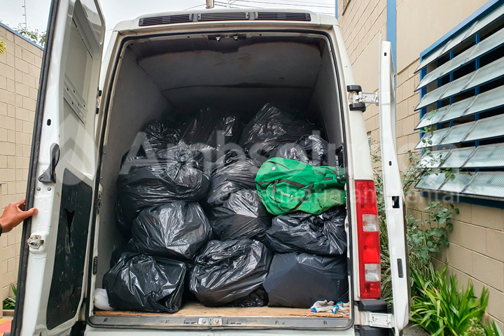

Projetos
Gerenciamento de resíduos
A fim de realizar o transporte seguro e adequado de resíduos perigosos para sua destinação final, é empregada uma frota especializada de veículos para carga geral fracionada.
O processo de gerenciamento de resíduos requer especial atenção à regularização ambiental. A empresa oferece soluções para a obtenção de CADRI (Certificado de Movimentação de Resíduos de Interesse), incluindo indicações claras para acondicionamento e identificação dos resíduos perigosos gerados durante as atividades realizadas, seguindo normas de segurança, prevenção e compatibilidade.